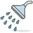

El agua es un recurso imprescindible para la vida y para el funcionamiento de los ecosistemas. Los seres humanos utilizamos el agua de acuerdo a nuestras necesidades y en su aprovechamiento introducimos ciertos cambios en el ciclo hidrológico. Estos cambios afectan tanto la disponibilidad como la calidad del agua.
 Ciérrala bien
Ciérrala bien
Cerrar la llave. Por cada minuto que pasa se gastan 10 litros de agua; para cepillarse los dientes se consumen 250 ml del líquido; cada minuto que se deja abierta la llave del lavabo se desperdician 5 litros; y si el patio o el auto se lavan con manguera, se desperdician 12 litros por minuto transcurrido.
 Repara Fugas
Repara Fugas
El goteo de una fuga en una tuberia puede perder hasta 22 mil litros de agua al mes, un inodoro en mal estado puede perder hasta 150 mil litros de agua al mes, una cisterna con válvulas malogradas puede perder al mes 360 mil litros de agua .
Báñate Rápido
No invertir más de 5 minutos en la ducha. Tan sólo en la ciudad de México, el gasto diario de agua por persona es de alrededor de 300 litros al día, y comienza con el baño diario.
Reforesta
Los bosques son los ecosistemas que más agua producen: al caer la lluvia es asimilada por la espesa vegetación y se evapora nuevamente para formar otra vez nubes. Al escurrirse por la superficie del suelo, forma ríos, arroyos, lagos y lagunas. Al filtrarse en el subsuelo (con la ayuda de los árboles, arbustos, pastos, etc., y a través de las rocas), forma los mantos freáticos o acuíferos.
Reutiliza
Reutilizar el agua. El agua que resulta de la última carga de la lavadora, por ejemplo, sirve para limpiar la casa o el sanitario; el agua que sale de la regadera mientras se espera la caliente, se puede utilizar para regar las plantas o lavar el auto. El objetivo es no desperdiciar el vital líquido.
Evita desechos
Evitar desechar directamente en el lavatrastes residuos como el aceite, en esta misma categoría se puede considerar el uso mínimo del detergente para la ropa, de lo que se trata es de no vertir estos productos sobre el agua, pues ésta se contamina y ya no puede ser tratada para otros usos.